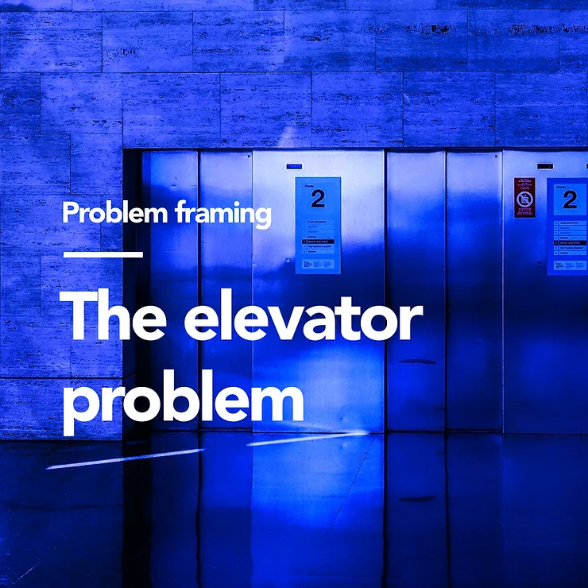
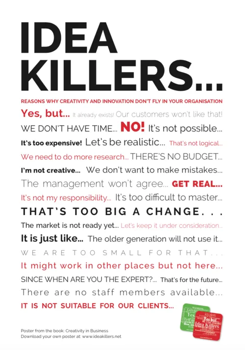

Ideation &
Business Thinking
Hack@10 2023
Meet your Speaker
|
Topics
- Identifying the problem statement
- Brainstorming the solution
- Building your solution's business case
Drop your questions anytime
via
slido!
Code: #3038502
Identifying
the
Problem Statement
Part 1
“The rigor with which a problem is defined is the most important factor in finding a good solution.”– Dwayne Spradline,
Are You Solving The Right Problem?
Understand the case study properly & break it down into parts
- Narrow down the scope (e.g. potential target groups/personas, core issues).
- List down all initial follow-up questions via the nested WHYs & HOWs method.
- Be pedantic. Scrutinise every wording and its meaning.
- Validate every assumption made. Ask for clarification from mentors/organiser.
Let's do an example!
“How might we help the young adults in developing financial literacy to grow their wealth at an early age? ” — RHB Get Your Hack On 2023
- What are the potential target groups?
- What does 'growing their wealth' mean?
- How early is 'early age'?
- What are the factors that currently affects financial literacy development for said target group?
- If existing solutions already exist (which they almost always do), what are some of the limitations?
How to get inspirations for potential problem statements?
1. Ask the Internet 🌐
- Google (or Bing 🙃).
- Research papers/articles.
- Previous solutions of other hackathons.
-
ChatGPT? 😌
(but only to seek ideas, NOT as final output!)
2. Ask others 👥
- Conduct polls, surveys & short interviews.
- Ask on social media e.g. Twitter, Instagram stories, Tik Tok.
3. Ask yourself 🙋🏻♂️
- Do you have any personal experience that could be used as basis for a problem statement?
The best strategy is to have your problem statement supported by both statistical (data-driven) & anecdotal (emotion-driven) evidence.
How to know you're solving the right problems?
|  |
Imagine you're an owner of an office
building & your tenants are
complaining about having to wait long
for the elevator. |
- Note that the initial problem framing is not wrong.
- Takeaway: Real-world issues are typically multicausal & can be addressed in many ways.
- Identifying a different aspect of the problem can spark solutions to problems that have seemed intractable.
- Expand the solution space by opening our minds to the frustrations/pains being felt.
The point of reframing is not to find the “real”
problem.
Rather, it's to see if there is
a
better one to solve.
- Is there a clear & pressing demand for a solution to this problem?
- Is this problem just temporary/occasional? Were there days when the problem didn't exist (positive exceptions)?
- Are existing solutions so insufficient that it warrants an urgent & better alternative?
- Are the pain points related to the problem relatable & easy to empathise?
- Ask your guts: Is the problem really worth solving?
“If I were given one hour to save the planet, I would spend 59 minutes defining the problem and one minute resolving it.”— Albert Einstein
Brainstorming
the
Solution
Part 2
Optimise how you conduct your ideation by deferring judgement
But first, why should we defer judgement?
Isn't it faster to generate & evaluate our ideas simultaneously?
Imagine this scenario:
- One of your team members volunteers an idea. 🙋🏻♂️
- Then, automatically & on cue, another member tells everyone why it won't work. 🤨
- The idea is withdrawn & never captured. 🙅🏻♂️
- Even worse, a long argument ensues back & forth as to the merits of the idea. 🤬
- Eventually, everyone becomes frustrated. 😠
- No solution idea gets shortlisted in the end. 😓
- Avoid the tendency to think of a possibility & then find fault with it almost immediately.
- Remember: All ideas are innocent until proven guilty! Shoot them down later, just not now.
- Creativity demands both divergent & convergent thinking, but not at the same time.
- Ideas should be allowed to be expressed as is, without criticism, censure or requests for detail*. *unless the ways they are expressed are simply not understood.
Beware of idea killers

TLDR:
Would your drive your car with
one foot on the gas
&
another on the brake
simultaneously?
Okay, so how to defer judgement?
What do these authors have in common?
 Maya Angelou
Maya Angelou
|
 Ernest Hemingway
Ernest Hemingway
|
 Joan Didion
Joan Didion
|
- Maya Angelou would write in the morning & edit in the afternoon.
- Ernest Hemingway did the same.
- Didion says that she writes for as long as she can in the morning. Then in the late afternoon, she'll have a drink & goes over what she wrote earlier in the day.
Employ the 50/50 rule
- Conduct two different brainstorming sessions separately.
- The first session → Right brain: Generate & document the ideas. Share thoughts & possibilities.
- The second session → Left brain: Compare. Scrutinise. Weigh. Evaluate. Sort. Choose.
-
Your team members will feel more at
ease
→
↑ Productivity, ↑ Creativity, ↑ Solution.
“The imaginative mind must be given free rein to run without the constraints of the saddle, stirrup and harness of the judicial mind — else you put yourself & your participants in danger of brainstorm asphyxiation.”— Idea Champions
Novel ≠ Good.
- A winning solution doesn't have to be entirely new. This is a huge & common misconception.
- It's fine if your solution builds/improves on top of existing ones. That's called innovation.
- Regardless, identify & assess your solution's main differentiator/WOW factor/USP.
Validate your idea
- Does the solution effectively solve the problem statement(s)? What pain points are your product relieving? Don't be syok sendiri!
- What is so unique about your solution that stops anyone from using a similar alternative? How can it compete in the market? (Uniqueness)
- Is there a steep learning curve and high cognitive effort for your target users to operate your solution?
- Is your solution merely a low-hanging fruit? e.g. UI/UX improvements
- Can the MVP of this solution be implemented within the hackathon timeframe? (Feasibility)
- Does the solution require legal changes / adhere to existing laws? e.g. PDPA, GDPR
Let's try out an exercise!
 Sample Case Study |
 Padlet |
“Ultimately, ideation is a probabilistic game. You want to maximize the likelihood that you'll get a suitable idea.”— Clark Quinn